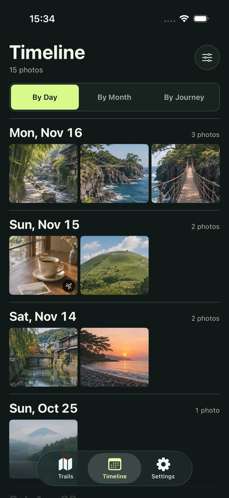
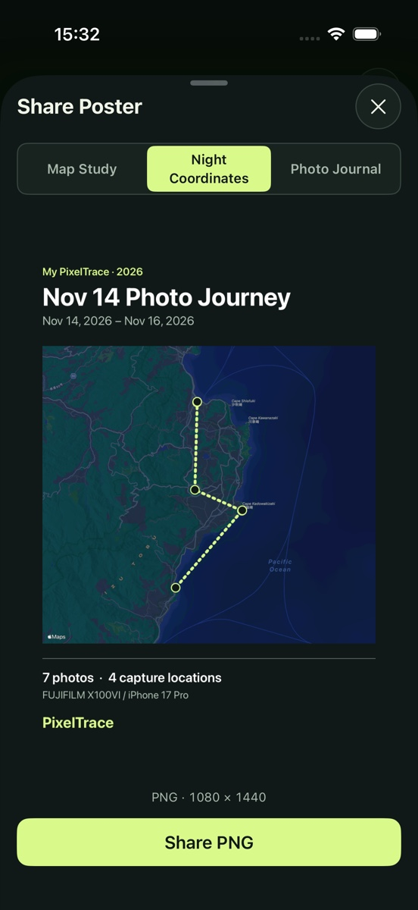

Every photoleaves a trace.
PixelTrace connects the dates, places and cameras in your photo library. Follow a photo journey back to the day it happened.


Follow the photos back.
Start with the places you photographed, or return to the moment in your timeline.
See where you took each photo.
Photos with GPS form a route in capture order. Nearby shots group into stops you can tap to revisit.
Start with a day you remember.
Browse by day, month or journey, then narrow the view by date, camera, area or GPS availability.

Look closer at a photo.
Swipe or zoom in full screen. Swipe up for the capture date, camera settings and a map of where you took it.

Take the journey with you.
Choose from three posters and export the route, photo count and camera information as a 1080 × 1440 PNG.

Choose which photos PixelTrace can see.
You can change photo access in iOS Settings. Journey calculations, filtering and photo metadata are processed on your device.
Privacy policy